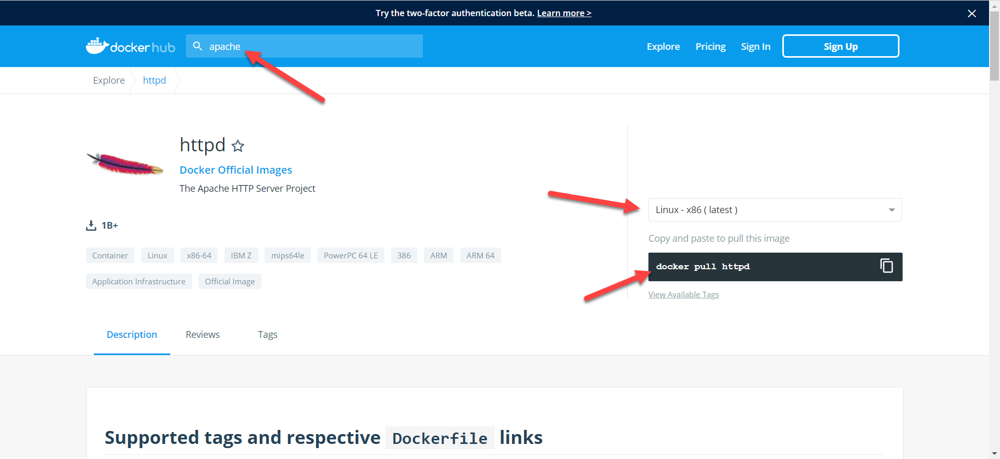
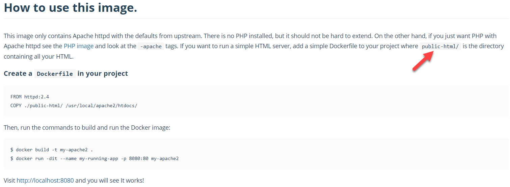
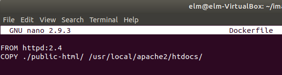
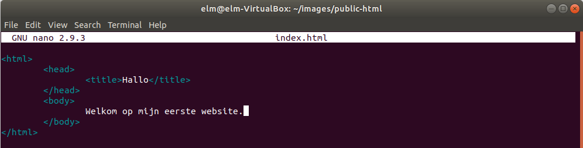
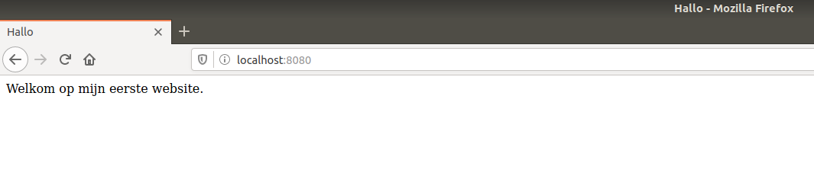

Je zet hier de webserver Apache in een container en je laat er je eigen bladzijde door serveren. Je haalt eerst de kant-en-klare image van Docker Hub, je schrijft daarna een Dockerfile die er je eigen bestanden in kopieert, en je start het geheel op poort 8080 van je machine.
Docker zelf komt gewoon uit de repository.
Surf naar hub.docker.com en zoek op apache. De officiële image
heet httpd, naar de naam waaronder Apache als programma bekendstaat. Rechts op
die bladzijde staat het commando om ze binnen te halen.

Haal de image op.
Using default tag: latest
latest: Pulling from library/httpd
123275d6e508: Pull complete
e984dd982a6e: Pull complete
963280e5cf81: Pull complete
6faf90d050b2: Pull complete
962b56984bb0: Pull complete
Digest: sha256:d5dc0d279039da76a8b490d89a5c96da83a33842493d4336b42ccdfbd36d7409
Status: Downloaded newer image for httpd:latest
De vijf regels met Pull complete zijn de lagen waaruit de image is opgebouwd. Je hebt nu een image op je machine, en nog geen draaiende container.
Lees op diezelfde bladzijde de handleiding, onder How to use this image. Daar staat welke map binnen de image je bladzijden verwacht, en hoe de Dockerfile eruit hoort te zien.

public-html moet
hetenMaak een map voor je werk en open daarin een nieuw bestand met de naam Dockerfile, met een hoofdletter D en zonder extensie.
Typ deze twee regels over, precies zoals ze in de handleiding staan. Sla op met CTRL + O en sluit af met CTRL + X.

De schuine streep aan het einde van elk pad hoort erbij: hij zegt dat het om een map gaat en niet om een bestand.
Maak de map public-html, ga erin, en maak daar je bladzijde.
Sla je die cd public-html over, dan komt index.html naast de
Dockerfile te staan in plaats van erin. De build slaagt dan wel, en je krijgt straks een
lege webserver.
Typ je bladzijde en sla ze op met CTRL + O en CTRL + X.

Ga terug naar de map met de Dockerfile en bouw je image. De -t geeft ze een naam, en
de punt achteraan zegt dat de Dockerfile in de map staat waar je nu bent.
Sending build context to Docker daemon 3.584kB
Step 1/2 : FROM httpd:2.4
---> bdc169d27d36
Step 2/2 : COPY ./public-html/ /usr/local/apache2/htdocs/
---> 74444b1cb224
Successfully built 74444b1cb224
Successfully tagged my-apache2:latest
De twee stappen zijn de twee regels van je Dockerfile.
Start een container uit je image.
18aab2d6102cb3143caa20c09571a17bbcec5c05de64fceddc8b15d4d3dee56f
De lange reeks tekens is het nummer van je container. In 8080:80 staat links de
poort van je machine en rechts die van de container: Apache luistert binnenin op 80.
Surf in Firefox naar localhost:8080.

Kijk na welke containers er draaien.
Pas je index.html aan, dan verandert er niets aan wat je op poort 8080 ziet: die kopie
is bij het bouwen in de image terechtgekomen. Je zou de container moeten stoppen, opnieuw builden en
opnieuw starten. Dat een image niet meer verandert, is precies waarom ze op elke machine hetzelfde
draait.